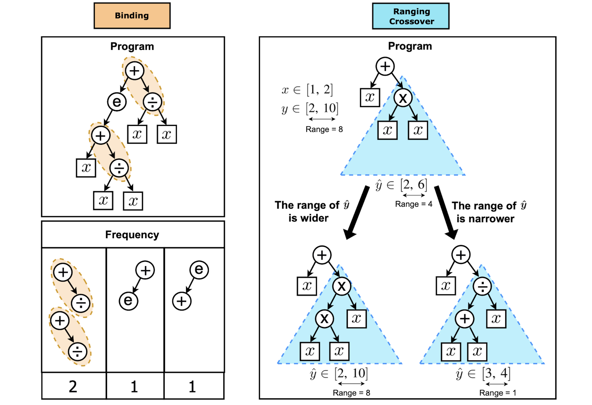
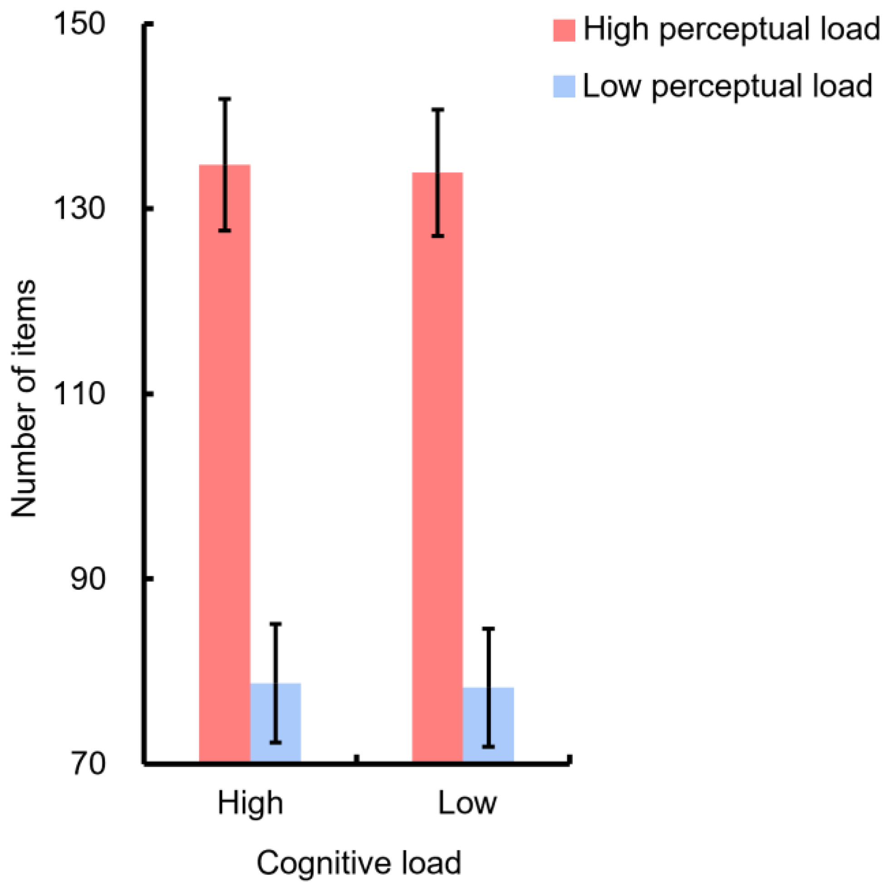

|
Jung-Chun Liu I am a second-year M.S. student at Taiwan Evolutionary Intelligence Laboratory (TEIL), advised by Prof. Tian-Li Yu. My research interests include cognitive model and knowledge representation in reinforcement learning. I received my B.S. degrees with double majors in Electrical Engineering and Psychology from National Taiwan University (NTU) in 2021. I am fortunate to have worked with Prof. Tsung-Te Liu on multi-robot formation control using collective behavior model on chip, and with Prof. Su-Ling Yeh and Prof. Shao-Yi Chien on assessing workload by eye movements in my undergraduate research. This is my academic website. For my personal website with more interesting stuff, please visit here. Email / CV / Google Scholar / Github |

|
ResearchI have always been interested in understanding intelligence, both in humans and in machines. My curiosity centers on the intricacies of reasoning and decision-making, as well as the art of crafting a cognitive architecture that articulates these abilities. My previous work resides at the nexus of computer science and cognitive science, covering areas such as reinforcement learning, symbolic AI, collective behavior model and workload assessment. Representative papers are highlighted. |

|
Integrating Planning and Deep Reinforcement Learning via Automatic Induction of Task Substructures
Jung-Chun Liu, Chi-Hsien Chang , Shao-Hua Sun , Tian Li Yu Under review |
|

|
GP with Ranging-Binding Technique for Symbolic Regression
Wen-Zhong Fang, Chi-Hsien Chang, Jung-Chun Liu, Tian Li Yu Proceedings of the Companion Conference on Genetic and Evolutionary Computation (GECCO) 2023 |

|
Multi-Robot Formation Control using Collective Behavior Model and Reinforcement Learning
Jung-Chun Liu, Tsung Te Liu IEEE International Symposium on Circuits and Systems (ISCAS), 2022 |
|

|
Assessing Perceptual Load and Cognitive Load by Fixation-Related Information of Eye Movements
Jung-Chun Liu, Kuei-An Li, Su-Ling Yeh, Shao-Yi Chien Sensors, 2022 |
|
Special thanks to Jon Barron for the source code of this website. |